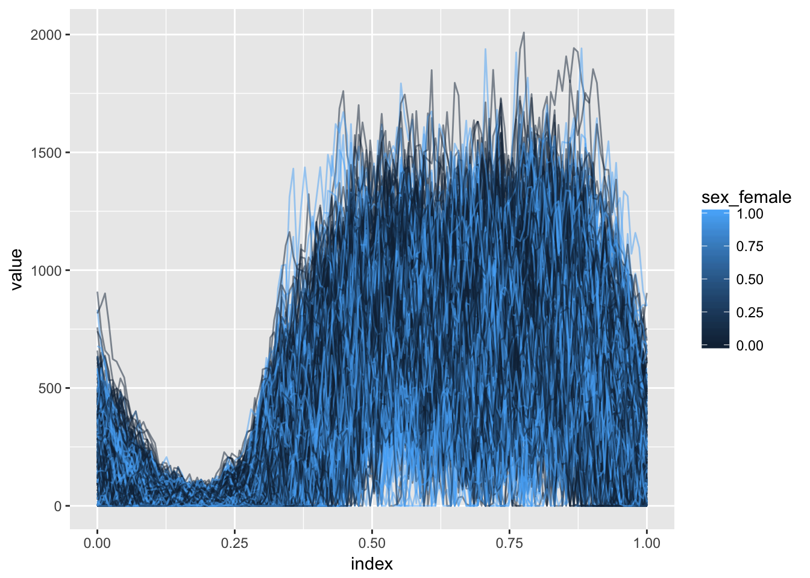
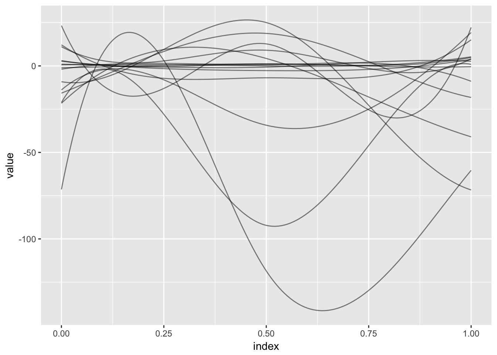
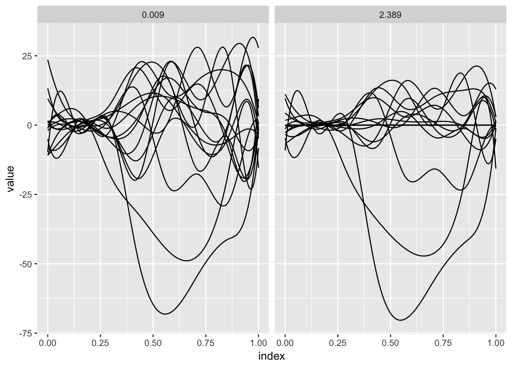
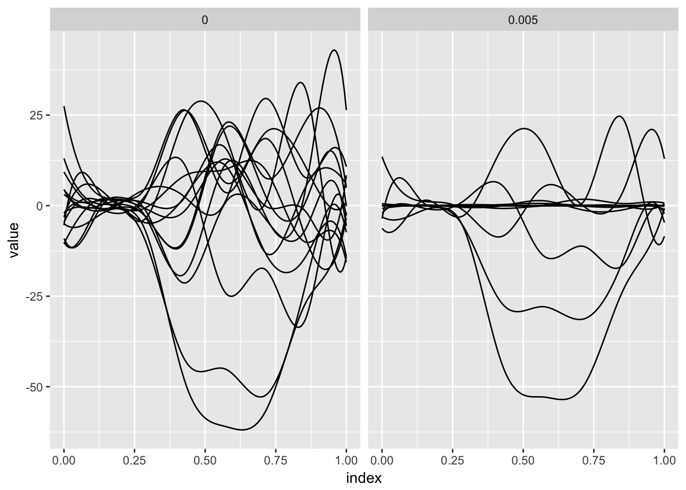
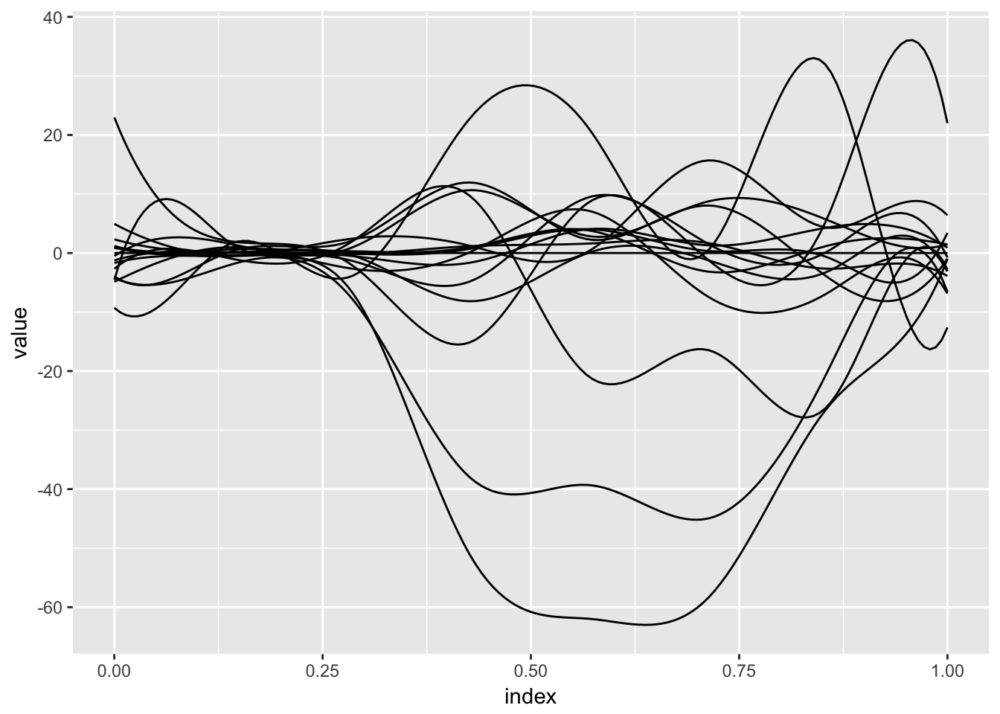

This page contains a combination of traditional lecture materials (slides) and code demonstrating the relevant methods. The short course will proceed by working through both. We will use several recent packages in our examples; see the About page for information about the package versions.
library(tidyverse)
## Warning: package 'tidyverse' was built under R version 3.2.5
## Loading tidyverse: ggplot2
## Loading tidyverse: tibble
## Loading tidyverse: tidyr
## Loading tidyverse: readr
## Loading tidyverse: purrr
## Loading tidyverse: dplyr
## Warning: package 'ggplot2' was built under R version 3.2.5
## Warning: package 'tibble' was built under R version 3.2.5
## Warning: package 'tidyr' was built under R version 3.2.5
## Warning: package 'purrr' was built under R version 3.2.5
## Warning: package 'dplyr' was built under R version 3.2.5
## Conflicts with tidy packages ----------------------------------------------
## filter(): dplyr, stats
## lag(): dplyr, stats
library(grpreg)
## Warning: package 'grpreg' was built under R version 3.2.5
## Loading required package: Matrix
##
## Attaching package: 'Matrix'
## The following object is masked from 'package:tidyr':
##
## expand
##
## Attaching package: 'grpreg'
## The following object is masked from 'package:dplyr':
##
## select
library(splines)
library(refund)
## Warning: package 'refund' was built under R version 3.2.5
library(refund.shiny)In this section we’ll use the Activity data to motivate the function-on-scalar regression model and variable selection in this context. Our main outcome of interest is the observed physical activity profile, with predictors including age, sex, and season. Below we plot activity profiles colored by sex.
load("./DataCode/Activity.RDA")
as_refundObj(accel) %>%
left_join(dplyr::select(covariate_data, id, sex_female)) %>%
ggplot(aes(x = index, y = value, group = id, color = sex_female)) + geom_path(alpha = .5)
## Joining, by = "id"
Slides below review function-on-scalar regression and introduce the ideas for variable selection in this context.
To motivate the use of variable selection methods for this dataset, we can examine the results of an analysis that does not shrink coefficients. The code below fits such a model and shows all resulting coefficients; while there are some obvious large effects, many others are small and may not be necessary.
temp_df = covariate_data
temp_df$accel = accel
fit_unpenalized = bayes_fosr(accel ~ season_warm + sex_female + BMIZ + TV_g2hr + video_g1hr +
mom_work_yes + asthma_yes + child_age + mom_age + educ_mom + num_rooms +
mom_born_US + tricep + subscap + skinfold, data = temp_df)
## Beginning Algorithm
## .........
as_refundObj(fit_unpenalized$beta.hat[-1,]) %>%
ggplot(aes(x = index, y = value, group = id)) + geom_path(alpha = .5)
(Incidentally, as for FPCA analyses, the refund.shiny package has helpful tools for visualizing the results of a function-on-scalar regression analysis.)
plot_shiny(fit_unpenalized)In contrast to the DTI dataset, in this setting curves are observed over the full time domain for all subjects. Therefore we begin by organizing the data for model fitting. In particular, we organize the usual fixed effects design matrix with scaled predictors; combine with a spline basis for function-on-scalar regression; and vectorize the response matrix.
covariate_data = dplyr::select(covariate_data, -id)
X_fixef = scale(data.matrix(covariate_data))
basis = bs(seq(0, 1, length = 144), df = 5, intercept = TRUE)
X_model = kronecker(X_fixef, basis)
y = as.vector(t(scale(accel, scale = FALSE)))Next, we fit the model using group variable selection.
predictor_names = names(covariate_data)
group = factor(rep(predictor_names, each = 5), levels = predictor_names)
fosr_fit = grpreg(X = X_model, y = y, group = group, penalty = "grMCP")The panels below show the results of the preceding model fit for two values of the tuning parameter. For each, estimated spline coefficients are combined with the spline basis to produce the coefficient function.
single_coef_construct = function(coefs, basis, name) {
coef_data_frame = data.frame(
value = basis %*% coefs,
index = seq(0, 1, length = dim(basis)[1]),
id = name,
stringsAsFactors = FALSE
)
}
coef_construct = function(lambda_index, fit) {
arg_list = list(split(fit$beta[-1, lambda_index], group),
rep(list(basis), length = length(predictor_names)),
predictor_names)
pmap(arg_list, single_coef_construct) %>%
bind_rows %>%
mutate(lambda = round(fit$lambda[lambda_index], 3))
}
bind_rows(coef_construct(12, fosr_fit), coef_construct(80, fosr_fit)) %>%
ggplot(aes(x = index, y = value, group = id)) + geom_path() +
facet_grid(~lambda)
A noted complication in function-on-scalar regression is that errors will be correlated; the direct application of available variable selection methods do not account for this. One option, used in Chen et al (2016), is “pre-whitening”. Code below implements this step, re-fits the variable selection model and plots the results.
fitted.vals = X_model %*% fosr_fit$beta[-1, 20]
residuals = y - fitted.vals
resid_mat = matrix(residuals, nrow = dim(accel)[1], ncol = dim(accel)[2], byrow = TRUE)
fpca_resid = fpca.sc(resid_mat, var = TRUE)
est_cov = fpca_resid$efunctions %*% diag(fpca_resid$evalues) %*% t(fpca_resid$efunctions) +
diag(fpca_resid$sigma2, dim(accel)[2], dim(accel)[2])
c <- chol(solve(est_cov))
basis_whitened = c %*% basis
X_model_whitened = kronecker(X_fixef, basis_whitened)
y_whitened = as.vector(t(accel %*% t(c)))
fosr_fit_whitened = grpreg(X = X_model_whitened, y = y_whitened, group = group, penalty = "grMCP")
bind_rows(coef_construct(20, fosr_fit_whitened), coef_construct(80, fosr_fit_whitened)) %>%
ggplot(aes(x = index, y = value, group = id)) + geom_path() +
facet_grid(~lambda)
The DTI dataset, used to illustrate scalar-on-function regression in the previous section, can also be used as an example for function-on-scalar regression by treating a single tract profile as an outcome and the many covariates as predictors.
You’re encouraged to try the preceeding variable selection tools on these data, and to extend them in directions that interest you. For example, you may want to modify the preceeding to account for incompletely-observed curves, to implememnt cross-validation to choose the tuning parameter, or to incorporate more explicit smoothness constraints.
You may also be interested in exploring the use of the FLAME method in Parodi and Reimherr (2016); a preprint and R code implementing this method for the Activity data is available here. Another method by this research group is the Adaptive Function-on-Scalar Lasso (AFLS), described in Fan and Reimherr (2016); a Matlab implementation of this method for the Activity data is included in the collection of code.
Lastly, we note that similar functionality is implemented in refund::fosr.vs() and illustrate this for the Activity data with the code below. Note that this uses cross validation and can take some time to execute; the resulting coefficient functions are plotted below.
temp_df = data.frame(scale(covariate_data))
temp_df$accel = scale(accel, scale = FALSE)
fosr.vs_fit = fosr.vs(accel ~ ., nbasis = 5, data = temp_df, method = "grMCP")
## Beginning iterative algorithm
## ...
as_refundObj(fosr.vs_fit$coefficients) %>%
ggplot(aes(x = index, y = value, group = id)) + geom_path()